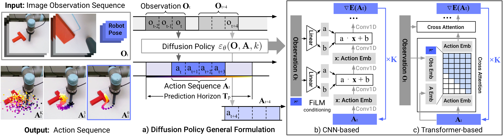
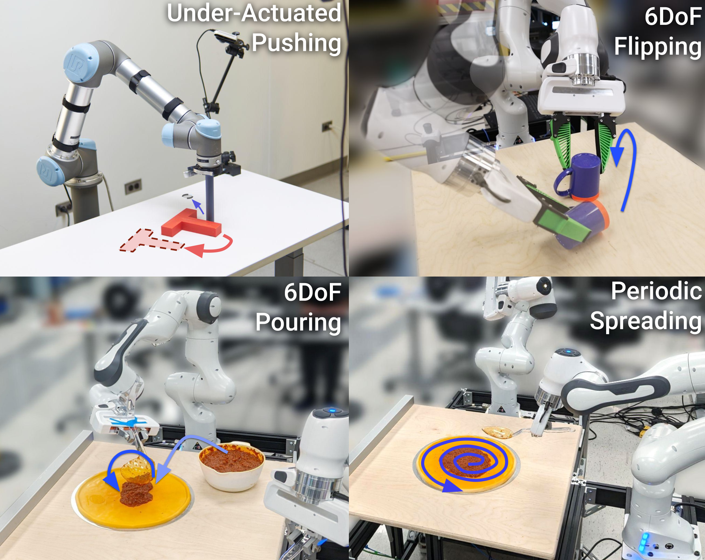

2023 · RSS · CHI ET AL.（COLUMBIA / TRI）
Diffusion Policy 精读
1. 问题：模仿学习的两个顽疾
多模态：同一个观测下往往存在多条正确动作轨迹（从左绕和从右绕抓同一个杯子都对）。行为克隆若用 MSE 回归，模型学的是所有可行轨迹的条件均值——均值大概率落在两条可行轨迹之间，物理上不可执行。此前的解法（动作分类离散化、GMM 拟合、CVAE）各有各的表达瓶颈。
误差复合：闭环执行时，一步小偏差把机器人带进训练分布没覆盖的状态，下一步偏差更大。单步预测的策略没有“对未来一段时间的联合规划”，误差在时间上自由累积。
2. 方法精读
2.1 把 DDPM 搬到动作空间
前向过程对真值动作序列逐步加噪：$x^k = \sqrt{\alpha_k},x^{k-1} + \sqrt{1-\alpha_k},\epsilon^{k-1}$，$k=1..T$；网络 $\epsilon_\theta(x^k, k, o)$ 以观测 $o$ 为条件预测噪声。一个漂亮的视角是论文把去噪解释为学习率调度下的梯度下降：$\epsilon_\theta$ 实际上是能量函数 $E(x)$ 的梯度场，$\sigma_k^2/\alpha_k^{k-1}$ 就是步长——噪声调度 = 优化器调度，这解释了为什么去噪能“收敛”到分布里的高质量样本。
推理从纯噪声 $x^T$ 起步迭代 T 步；由于每步都要重算 $\epsilon_\theta$，作者用 DDIM 解耦训练与推理的迭代数——训练走完整链（100 步量级），推理可以少步（项目实现里 DDIM 10 步）来满足闭环控制的实时性。
2.2 两个关键工程决策
- 滚动视界控制（receding horizon）：预测未来 Tp 步、只执行前 To 步就重新观测再预测。Transformer 版取 Tp=16、To=8——chunk 提供时间一致性与平滑，滚动提供闭环性。这是后来 action chunk 一切玩法（ACT、π0 的 H=50）的原型。
- 视觉条件化只算一次：去噪迭代 T 步中观测特征不变，因此视觉编码只做一次、被全部去噪步共享——推理成本大头被砍掉，这是扩散策略能实时的基础之一。
2.3 两种网络形态
CNN 版：FiLM 条件化的时序卷积（一维时间 U-Net），适合低维状态输入、固定视界；Transformer 版：时序扩散 transformer，用 min-SNR 加权损失缓解 CNN 版的“过平滑”（over-smoothing）效应，在高频动作变化与速度控制任务上明显更好——即本站动画里“能走到尖锐拐点”的能力。两版共享的视觉前端：ResNet-18（不用 ImageNet 预训练）+ spatial softmax 池化（保留空间结构）+ GroupNorm 替换 BatchNorm——GroupNorm 与权重 EMA 的组合是扩散训练稳定性的隐藏前提。

3. 结果与消融
15 个真机任务（Push-T、倒水、6-DoF 插入、双臂整理等）平均成功率 60.7%，此前 SOTA 44.6%。消融层面值得记住的三件事：①在多模态任务（如 Push-T 要从两侧推）上，DP 学出双峰分布而回归头塌到均值；②动作 chunk 消融中滚动视界优于固定开环执行；③视觉编码不预训练反而更好——扩散目标本身提供了足够的学习信号，把表示学习的负担从“预训练”转移到了“策略训练”内部。

4. 研究者注记
①推理成本是扩散动作头的原罪：T 步去噪 × 每步全网络前向。DP 用“视觉只编码一次 + DDIM 少步”压成本，π0 换成直线路径的 flow matching 把步数压到个位数——这是理解后续所有动作头演化的主线。②DP 仍是纯 BC：它表达了多模态，但没有解决“错了会复合”——π*0.6 页面会讲这个坑怎么用 RL 填。③复现入口：real-stanford/diffusion_policy 与 LeRobot 的 diffusion 策略实现；超参口径以官方仓库为准。
参考：Chi et al., Diffusion Policy: Visuomotor Policy Learning via Action Diffusion, RSS 2023（arXiv:2303.04137 · 项目页）